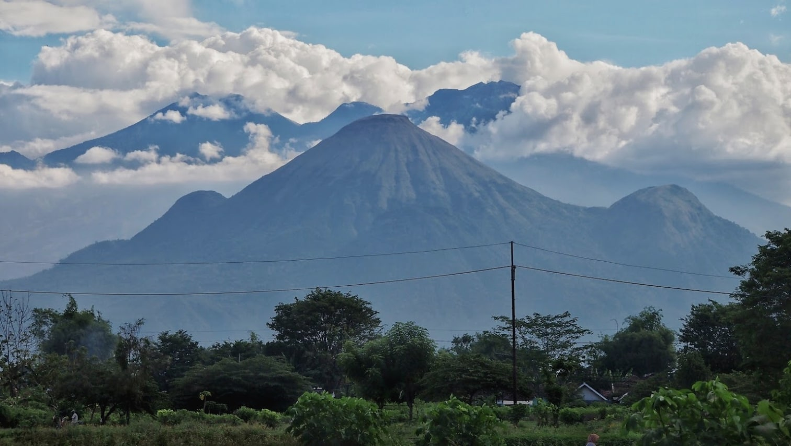
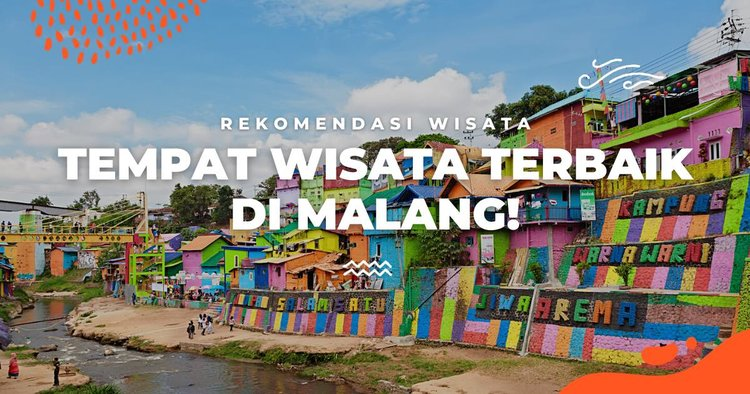

Malang
Kota yang dijuluki sebagai kota apel , yang terletak di Provinsin Jawa Timur.
Sejarah

Malang merupakan sebuah kerajaan yang berpusat di wilayah Dinoyo, dengan Raja Gajayana. Tahun 1882 rumah-rumah di bagian barat kota didirikan dan kota didirikan alun-alun dibangun. 2 Maret 1947 Pemerintah Republik Indonesia kembali memasuki Kota Malang.
Julukan Malang Kota Bunga erat kaitannya dengan banyaknya taman dan ragam pepohonan yang menghiasi Kota Malang.
Geografis

Keadaaan Geografis
Letaknya yang berada ditengah-tengah wilayah Kabupaten Malang secara astronomis terletak 112,06° – 112,07° Bujur Timur dan 7,06° – 8,02° Lintang Selatan, dengan batas wilayah sebagai berikut : Sebelah Utara : Kecamatan Singosari dan Kec. Karangploso Kabupaten Malang.
Wisata

Ada beberapa detinasi wista yang dapat dikunjungi beberarapa diantaranya adalah :
- Alun-Alun Malang adalah salah satu taman kota yang berada di Kota Malang. Wisata ini merupakan tempat wisata yang ramai akan wisatawan pada hari hari biasa maupun pada hari libur. Selain itu, tempat ini memberikan suasana yang dapat mengatasi kejenuhan akan aktivitas kita sehari-hari. Sangat disayangkan jika kamu berada di Kota Malang, namun tidak mengunjungi taman kota yang memiliki pesona keindahan yang tiada duanya.
- Museum Angkut merupakan taman bermain tematik kendaraan yang termasuk bagian dari Jatim Park Group. Museum ini pertama kali dibuka untuk umum di tahun 2014 dan langsung menarik perhatian.
- Asal nama Gunung Bromo adalah berasal dari kepercayaan warga umat Hindu di sekitar. Masyarakat percaya bahwa Gunung Bromo meninggalkan jejak Dewa Brahma, selain itu mereka percaya bahwa Gunung Bromo adalah tempat bersemayam dewa yang melindungi mereka yaitu Dewa Brahma, Dewa Wisnu, dan Dewa Siwa.
Demikianlah sekilas informasi Kota Malang, Jawa Timur